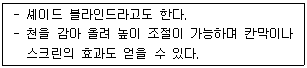
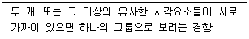
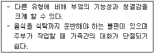
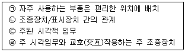
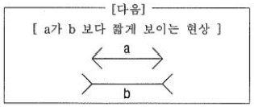
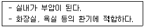
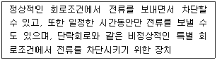
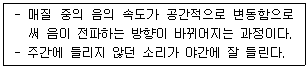

실내건축기사(구) (2019-09-21 기출문제)
1과목: 실내디자인론
1. 다음 중 조닝(zoning)계획에서 존(zone)의 설정 시 고려할 사항과 가장 거리가 먼 것은?
- 사용빈도
- 사용시간
- 사용행위
- 사용재료
(정답률: 86%)

2. 한국의 전통가구 중 장에 관한 설명으로 옳지 않은 것은?
- 단층장은 머릿장이라고도 불린다.
- 이층장이나 삼층장은 보통 남성공간인 사랑방에서 사용되었다.
- 이불장은 금침과 베개를 겹겹이 쌓아두는 장으로 보통 2층으로 된 것이 많다.
- 의걸이장은 외관의장에 따라 만살의걸이, 평의걸이, 지장의걸이로 구분할 수 있다.
(정답률: 81%)
3. 선의 종류에 따른 조형 효과에 관한 설명으로 옳지 않은 것은?
- 사선은 운동감, 속도감 등의 느낌을 준다.
- 수직선은 심리적으로 상승감, 엄숙함 등의 느낌을 준다.
- 수평선은 영원, 안정 등 주로 정적인 느낌을 준다.
- 곡선은 위험, 긴장, 변화 등의 불안정한 느낌을 준다.
(정답률: 84%)
4. 사무소 건축의 코어 유형에 관한 설명으로 옳지 않은 것은?
- 중심코어형은 유효율이 높은 계획이 가능한 형식이다.
- 편심코어형은 기준층 바닥면적이 작은 경우에 적합하다.
- 양단코어형은 2방향 피난에 이상적이며, 방재상 유리하다.
- 독립코어형은 코어 프레임을 내진구조로 할 수 있어 구조적으로 가장 바람직한 유형이다.
(정답률: 67%)
5. 다음 중 상업공간의 매장 내 진열장(show case) 배치를 계획할 때 가장 우선적으로 고려해야 할 사항은?
- 진열장의 수
- 조명의 조도
- 고객의 동선
- 바닥의 재질
(정답률: 88%)
6. 단독주택에서 부엌의 합리적인 규모 결정 시 고려할 사항과 가장 관계가 먼 것은?
- 작업대의 면적
- 주택의 연면적
- 가족구성원의 연령
- 작업인의 동작에 필요한 공간
(정답률: 83%)
7. 사무소 건축의 실단위 계획 중 개실시스템에 관한 설명으로 옳지 않은 것은?
- 독립성이 우수하다.
- 개방식 배치에 비해 공사비가 높다.
- 전면적을 유효하게 이용할 수 있어 공간절약상 유리하다.
- 방 길이에 변화를 줄 수 있지만, 연속된 복도 때문에 방 깊이에는 변화를 줄 수 없다.
(정답률: 63%)
8. 디자인 원리 중 통일에 관한 서명으로 옳지 않은 것은?
- 통일은 변화와 함께 모든 조형에 대한 미의 근원이 된다.
- 통일과 변화는 서로 대립되는 관계가 아니라 상호 유기적인 관계 속에서 성립된다.
- 동적 통일은 균일한 대상물이 연속적으로 배치됨으로써 안정감을 확보할 수 있게 해준다.
- 양식 통일(style unity)은 동시대적 양식을 나열하거나 관련된 기능의 유사성을 이용하여 통일성을 형성하는 방법이다.
(정답률: 49%)
9. 다음 설명에 알맞은 블라인드의 종류는?

- 롤 블라인드
- 로만 블라인드
- 버티컬 블라인드
- 베니션 블라인드
(정답률: 84%)
10. 시스템 가구의 디자인 조건에 관한 설명으로 옳지 않은 것은?
- 규격화된 디자인으로 한다.
- 통일된 디자인으로 조화를 추구한다.
- 안정성 있고 가벼워 이동에 편리하도록 한다.
- 용도를 단일화하여 영구적으로 사용할 수 있게 한다.
(정답률: 70%)
11. 창의 기본적 기능과 가장 거리가 먼 것은?
- 채광
- 통풍
- 장식
- 환기
(정답률: 86%)
12. 다음 설명에 알맞은 형태의 지각심리는?

- 근접성
- 유사성
- 연속성
- 폐쇄성
(정답률: 54%)
13. 마르셀 브로이어(Marcel Breuer)가 디자인한 의자는?
- 흔들 의자(rocking chair)
- 체스카 의자(Cesca chair)
- 투겐하트 의자(Tugendhat chair)
- 바르셀로나 의자(Barcelona chair)
(정답률: 72%)
14. 디자인 원리 중 조화를 가장 적절히 표현한 것은?
- 중심축을 경계로 형태의 요소들이 시각적으로 균형을 이루는 상태
- 전체적인 구성 방법이 질적, 양적으로 모순없이 질서를 이루는 것
- 저울의 원리와 같이 중심축을 경계로 양측이 물리적으로 힘의 안정을 구하는 현상
- 규칙적인 요소들의 반복으로 디자인에 시각적인 질서를 부여하는 통제된 운동감각
(정답률: 72%)
15. 다음과 같은 특징을 갖는 부엌의 유형은?

- 오픈 키친
- 독립형 부엌
- 다이닝 키친
- 반독립형 부엌
(정답률: 81%)
16. 다음 중 실내디자인을 평가하는 기준과 가장 거리가 먼 것은?
- 기능성
- 경제성
- 심미성
- 주관성
(정답률: 82%)
17. 벽에 관한 설명으로 옳지 않은 것은?
- 공간을 둘러싸는 수직적 요소이다.
- 공간의 형태와 크기를 결정하는 요소이다.
- 벽의 높이가 600mm 정도이면 공간을 시각적으로 차단하는 기능을 한다.
- 공간과 공간을 구분하고 분리함으로써 시각적, 청각적 프라이버시를 제공할 수 있다.
(정답률: 86%)
18. 상점건축에서 쇼윈도우, 출입구 및 홀의 입구부분을 포함한 평면적인 구성요소와 아케이드, 광고판, 사인, 외부장치를 포함한 입체적인 구성요소의 총체를 의미하는 것은?
- 파사드(facade)
- 스테이지(stage)
- 쇼케이스(show case)
- P.O.P(point of purchase)
(정답률: 80%)
19. 주택 거실의 가구 배치 방법 중 소파를 두 벽면에 연결시켜 배치하는 형식으로 시선이 마주치지 않아 안정감이 있는 것은?
- 대면형
- ㄷ자형
- 코너형
- 직선형
(정답률: 83%)
20. 호텔의 조명계획에 관한 설명으로 옳지 않은 것은?
- 객실의 욕실조명은 거울 위나 옆쪽에 설치 한다.
- 복도에는 50~100Lux 정도로 균일한 조명을 설치한다.
- 프런트데스크의 조명은 프런트 직원과 고객의 표정이 서로 확실히 보이도록 밝게 하는 것이 좋다.
- 객실에서 천장의 전체조명은 직접조명방식으로 하고, 탁상스탠드, 플로어스탠드, 벽부등과 같은 국부조명을 사용한다.
(정답률: 61%)
2과목: 색채학
21. 텔레비전의 모니터나 액정모니터 등과 같이 R, G, B로 색을 표현하는 혼색방법은?
- 동시감법 혼색
- 계시가법 혼색
- 병치가법 혼색
- 색료감법 혼색
(정답률: 69%)
22. 다음 배색에서 명도차가 가장 큰 배색은?
- 빨강, 파랑
- 노랑, 검정
- 빨강, 녹색
- 노랑, 주황
(정답률: 81%)
23. 온도감이 높은 난색으로 식당에서 식욕을 돋우기에 적합한 것은?
- 청록
- 파랑
- 노랑
- 주황
(정답률: 77%)
24. 문ㆍ스펜서(MoonㆍSpencer)의 색채조화론에서 조화가 되는 색의 관계에 해당되지 않는 것은?
- 통일조화
- 대비조화
- 동일조화
- 유사조화
(정답률: 54%)
25. 다음 중 색료를 혼합하여 만들 수 없는 색은?
- 주황
- 노랑
- 연두
- 남색
(정답률: 74%)
26. 오스트발트 색체계에서 17gc의 'c'는 무엇을 뜻하는가?
- 색상
- 순색량
- 백색량
- 흑색량
(정답률: 53%)
27. 조명에 의하여 물체의 색을 결정하는 광원의 성질은?
- 조명성
- 기능성
- 연색성
- 조색성
(정답률: 67%)
28. 먼셀 색입체의 종단면도에서 볼 수 없는 것은?
- 색상환의 변화
- 명도의 변화
- 채도의 변화
- 순도의 변화
(정답률: 39%)
29. JPEG 이미지 파일형식에 대한 설명으로 틀린 것은?
- 파일 용량이 작고 풍부한 색감의 표현이 가능하여 웹디자인 시 많이 사용된다.
- JPEG 포맷은 256색이라는 한계를 갖는다.
- 압축률을 높일수록 이미지의 손상이 커지므로 사용시 압축정도를 조절해야 한다.
- 호환성이 우수하다.
(정답률: 63%)
30. 다음 중 색에 대한 설명으로 틀린 것은?
- 물체의 색이 눈의 망막에 의해 지각된다.
- 반사, 흡수, 투과를 거쳐 지각된다.
- 인간의 눈을 통해 지각되는 물리적 현상이다.
- 연상과 상징 등과 함께 경험되는 심리적 현상과 관계가 없다.
(정답률: 80%)
31. NCS 색체계에 대한 설명이 옳은 것은?
- 독일 색채 연구소에서 만들어졌다.
- NCS 표기법은 미국에서 많이 사용되고 있다.
- 기본적인 색은 Y, R, G의 3색이다.
- 헤링의 4원색 이론을 바탕으로 한다.
(정답률: 59%)
32. 점진적인 변화를 주어 리듬감을 얻는 배색 기법은?
- 엑센트
- 그라데이션
- 세퍼레이션
- 도미넌트
(정답률: 81%)
33. 비렌(Birren)의 색과 형의 연결로 틀린 것은?
- 빨강 – 정사각형
- 노랑 - 삼각형
- 파랑 – 오각형
- 주황 - 직사각형
(정답률: 70%)
34. 조명광이나 물체색을 오랫동안 계속 쳐다보고 있을 때 색의 지각이 약해져서 생기는 현상은?
- 색온도
- 색순응
- 박명시
- 푸르킨예 현상
(정답률: 62%)
35. 흰색 바탕에 검은색 정방형을 일정한 간격으로 나열하면 격자의 교차부분에서 검은색 점이 지각된다. 이와 같은 현상을 설명할 수 있는 색채대비 현상은?
- 명도대비
- 보색대비
- 색상대비
- 계시대비
(정답률: 50%)
36. 가산혼합의 결과로 옳은 것은?
- Green + Blue = Yellow
- Red + Green + Blue = Black
- Red + Green = Yellow
- Red + Blue = Cyan
(정답률: 62%)
37. 아파트 건축물의 색체 계획 시 고려해야 할 사항이 아닌 것은?
- 개인적인 기호에 의하지 않고 객관성이 있어야 한다.
- 주변에서 가장 부각될 수 있게 독특한 색채를 사용한다.
- 전체적으로 질서가 있어야 하며 적당한 변화가 있어야 한다.
- 주거민을 위한 편안한 색채 디자인이 되어야 한다.
(정답률: 83%)
38. 녹색 잔디 구장 위에서 가장 눈에 잘 띄는 유니폼 색은?
- 자주
- 주황
- 파랑
- 연두
(정답률: 56%)
39. 비누 거품이나 전복 껍질 등에서 무지개 같은 색이 나타나는 것은 빛의 어떠한 현상에 의한 것인가?
- 왜곡현상
- 투과현상
- 간섭현상
- 직진현상
(정답률: 69%)
40. 색채의 시간성과 속도감에 대한 설명 중 옳은 것은?
- 3속성 중 명도가 주로 큰 영향을 미친다.
- 장파장의 색은 시간이 길게 느껴진다.
- 단파장의 색은 속도가 빠르게 느껴진다.
- 저명도의 색은 속도가 빠르게 느껴진다.
(정답률: 52%)
3과목: 인간공학
41. 근육에 공급되는 산소량이 부족한 경우 나타나는 현상으로 옳은 것은?
- 당원은 산소 없이 호기성(aerobic) 과정에 의해 젖산으로 축적된다.
- 젖산은 혐기성(anaerobic) 과정에 의해 물과 CO 로 분해되어 열과 에너지로 발산된다.
- 젖산과 신체의 활동 수준은 관계가 없다.
- 혈액 중에 젖산이 축적된다.
(정답률: 56%)
42. 암순응(dark adaptation)이 되어 있는 눈에 가장 둔감한 색상은?
- 백색
- 황색
- 초록색
- 보라색
(정답률: 66%)
43. 종이의 반사율이 75% 이고, 인쇄된 글자의 반사율이 15% 일 경우 대비는 몇 % 인가?
- -400
- -80
- 80
- 400
(정답률: 59%)
44. 촉각적 표시장치에서 사용될 수 있는 촉각적 암호화(coding) 방법으로 적합하지 않은 것은?
- 형상 암호화
- 표면 촉감 암호화
- 색상 암호화
- 크기 암호화
(정답률: 74%)
45. 시각적 표시장치와 조종장치(control)를 포함하는 패널 설계시 고려되어야 할 내용을 우선순위가 높은 것부터 순서대로 바르게 나열한 것은?

- ㉢ - ㉠ - ㉡ - ㉣
- ㉢ - ㉣ - ㉡ - ㉠
- ㉠ - ㉢ - ㉣ - ㉡
- ㉡ - ㉠ - ㉣ - ㉢
(정답률: 65%)
46. 생리적 활동 척도에 해당하지 않는 것은?
- 혈압
- 점멸융합주파수
- 분당 호흡용량
- 최대 산소소비능력
(정답률: 75%)
47. 작업장의 온도가 높고, 소음관리 시스템의 효율이 떨어졌을 때, 이를 개선하기 위하여 고려할 사항으로 가장 거리가 먼 것은?
- 시각적 고려
- 냉난방 고려
- 작업시스템 고려
- 기계장치 설비사항고려
(정답률: 74%)
48. 인간공학 연구에 사용되는 인간 기준의 척도와 가장 거리가 먼 것은?
- 주관적 반응
- 생리학적 지표
- 인간성능 척도
- 기계체계의 성능기준
(정답률: 59%)
49. 경고표지판 제작 시 고려해야 할 사항으로 적합하지 않은 것은?
- 문장이 간결해야 한다.
- 눈에 잘 띄어야 한다.
- 내용을 강조해야 한다.
- 은유적인 단어를 사용해야 한다.
(정답률: 80%)
50. 한국인 인체치수조사 사업에 있어 인체측정의 부위별 기준점과 그 정의에 대한 설명으로 틀린 것은?
- 손끝점 : 셋째 손가락의 끝
- 발끝점 : 셋째 발가락의 끝
- 목앞점 : 목밑둘레선에서 앞 정중선과 만나는 곳
- 머리마루점 : 머리수평면을 유지할 때 머리부위 정중선 상에서 가장 위쪽
(정답률: 74%)
51. 소음이 인간의 작업성능에 미치는 영향으로 옳은 것은?
- 복잡한 정신작업은 소음에 의하여 작업성능이 저하된다.
- 단순작업은 복잡한 작업보다 소음에 의해 나쁜 영향을 받기 쉽다.
- 암순응과 같은 감각의 반응은 소음에 직접적인 영향을 받는다.
- 소음은 작업의 정밀도의 저하보다는 총작업량을 저하시키기 쉽다.
(정답률: 71%)
52. 다음의 색 중 파장이 가장 짧은 것은?
- 적색
- 녹색
- 파란색
- 노란색
(정답률: 71%)
53. 일반적으로 의자의 설계에 있어 고려해야 할 사항과 가장 거리가 먼 것은?
- 등받이의 각도
- 의자 깊이와 폭
- 의자 다리의 위치
- 의자의 높이와 경사
(정답률: 75%)
54. 문자와 도형의 디자인에서 고려되어야 할 시각특성과 가장 관련이 적은 것은?
- 감각성
- 가시성
- 명시성
- 가독성
(정답률: 76%)
55. 10dB의 음량증가는 몇 배의 음압증가와 같은가?
- √10
- 10
- 20
- 100
(정답률: 52%)
56. 청각 표시장치가 시각 표시장치보다 더 적합한 경우는?
- 정보가 복잡하고 긴 경우
- 정보가 후에 재참조되는 경우
- 정보가 즉각적인 행동을 요구하는 경우
- 직무상 수신자가 한 곳에 머무르는 경우
(정답률: 75%)
57. 시지각에 영향을 미치는 게슈탈트(Gestalt)법칙에 해당하지 않는 것은?
- 근접성(Proximity)의 법칙
- 유사성(Similarity)의 법칙
- 연속성(Continuation)의 법칙
- 다양성(Diversity)의 법칙
(정답률: 72%)
58. 학습(learning)과 관련된 설명으로 옳은 것은?
- 성인교육에서는 외적 보상이 업무와 관련된 내재적 보상보다 효과적이다.
- 학습을 통하여 배운 내용은 실제 사회생활로 전이되기 어렵다.
- 일반적으로 긍정적 보상(상)보다 부정적 보상(벌)이 효과적이다.
- Gagné의 누적 학습순서모형에 따르면 자극-반응관계를 이용한 교육이 개념교육보다 선행되어야 한다.
(정답률: 54%)
59. 다음 착시현상의 명칭은?

- Köhler 의 착시
- Hering 의 착시
- Poggendorf 의 착시
- Mϋler-Lyer 의 착시
(정답률: 61%)
60. 신체반응의 척도와 척도의 판정을 위한 측정대상이 잘못 연결된 것은?
- 골격활동의 척도 - 부정맥
- 정신활동의 척도 - 뇌파 기록
- 국소적 근육활동의 척도 - 근전도
- 생리적 부담의 척도 - 맥박수
(정답률: 77%)
4과목: 건축재료
61. 건축용 세라믹 재료의 특성에 관한 설명으로 옳지 않은 것은?
- 토기 : 흡수율이 높고 강도가 약하다.
- 도기 : 회색이나 백색의 색상을 가지고 있으며 가볍다.
- 석기 : 소성 후 밝은 백색이 되며, 강도가 크고 유약으로 다양한 색상을 낼 수 있다.
- 자기 : 흡수성이 거의 없고 매우 높은 강도를 가지고 있다.
(정답률: 69%)
62. 말구지름 20cm, 길이가 5.5m인 통나무가 5개 있다. 이 통나무의 재적으로 옳은 것은?
- 0.3 m3
- 1.1 m3
- 1.8 m3
- 2.1 m3
(정답률: 47%)
63. 다음 중 유기질 단열재료에 해당되지 않는 것은?
- 셀룰로오스 섬유판
- 연질 섬유판
- 폴리스티렌 폼
- 규산 칼슘판
(정답률: 53%)
64. 건축재료의 요구성능 중 마감재료에서 필요성이 가장 적은 항목은?
- 화학적 성능
- 역학적 성능
- 내구성능
- 방화 • 내화 성능
(정답률: 67%)
65. 열가소성 수지 중 투광성이 높고 경량이며 내후성과 내약품성, 역학적 성질이 뛰어나기 때문에 유리 대용품으로서 광범위하게 이용되고 있는 것은?
- 염화비닐수지
- 폴리에틸렌수지
- 메타크릴수지
- 폴리프로필렌수지
(정답률: 41%)
66. 바탕과의 접착을 주목적으로 하며, 바탕의 요철을 완화시키는 바름공정에 해당되는 것은?
- 정벌바름
- 재벌바름
- 초벌바름
- 마감바름
(정답률: 60%)
67. 시멘트의 발열량을 저감시킬 목적으로 제조한 시멘트로 매스콘크리트용으로 사용되며, 건조수축이 적고 화학저항성이 큰 것은?
- 중용열 포틀랜드 시멘트
- 조강 포틀랜드 시멘트
- 실리카 시멘트
- 알루미나 시멘트
(정답률: 65%)
68. 쇄석을 골재로 사용하는 콘크리트의 최대 결점은?
- 시공연도 불량
- 압축강도 저하
- 골재입자의 부착강도 저하
- 유동성의 급격한 증가
(정답률: 39%)
69. 스트레이트 아스팔트에 관한 설명으로 옳지 않은 것은?
- 연화점이 비교적 낮고 온도에 의한 변화가 크다.
- 주로 지하실 방수공사에 사용되며, 아스팔트 루핑의 제작에 사용된다.
- 신장성, 점착성, 방수성이 풍부하다.
- 아스팔트에 동 • 식물유지나 광물성 분말등을 혼합하여 만든 것이다.
(정답률: 47%)
70. 미장재료의 응결시간을 단축시킬 목적으로 첨가하는 촉진제의 종류로 옳은 것은?
- 옥시카르본산
- 폴리알코올류
- 마그네시아염
- 염화칼슘
(정답률: 64%)
71. 시멘트의 조성화합물 중 수화반응이 늦고 장기강도를 증진시키며 수화열 저감에 따른 건조수축 감소 및 28일 이후의 강도를 지배하는 것은?
- 3CaO·SiO
- 2CaO·SiO2
- 4CaOㆍAl2O3·Fe2O3
- 3CaO·Al2O3
(정답률: 55%)
72. 건조 전 중량 5kg 인 목재를 건조시켜 전건중량이 4kg이 되었다면 이 목재의 함수율은 몇 %인가?
- 8%
- 20%
- 25%
- 40%
(정답률: 57%)
73. 점토제품의 품질에 관한 설명으로 옳지 않은 것은?
- 점토소성벽돌 표면의 은회색 그라우트는 소성이 불충분할 때 발생한다.
- 포장도로용 벽돌이나 타일은 내마모성의 보유가 매우 중요하다.
- 점토 벽돌의 품질은 압축강도, 흡수율 등으로 평가할 수 있다.
- 화학적 안정성은 고온에서 소성한 제품이 유리하다.
(정답률: 56%)
74. 목재의 역학적 성질에서 가력방향이 섬유와 평행할 경우, 목재의 강도 중 크기가 가장 작은 것은?
- 압축강도
- 휨강도
- 인장강도
- 전단강도
(정답률: 50%)
75. 수장 및 장식용 금속제품으로 천장, 벽 등에 보드를 붙이고 그 이음새를 감추는데 사용하는 것은?
- 코너비드
- 조이너
- 펀칭메탈
- 스팬드럴 패널
(정답률: 56%)
76. 다음 주 구조용 강재의 응력도-변형률 곡선에서 가장 먼저 나타나는 것은?
- 상위항복점
- 비례한계점
- 하위항복점
- 인장강도점
(정답률: 58%)
77. 유리블록(Glass Block)에 관한 설명으로 옳지 않은 것은?
- 유리블록은 블록모양으로 된 유리제의 중공블록이다.
- 벽에 사용 시 부드러운 광선이 들어오고 유리창보다 균일한 확산광이 얻어진다.
- 열전도율이 벽돌의 1/4 정도여서 실내의 냉ㆍ난방에 효과가 있다.
- 음향 투과손실은 보통 판유리보다 작다.
(정답률: 47%)
78. 석회암이 변성된 것으로 강도가 높고 색채와 결이 아름다우나, 풍화하기 쉬우므로 주로 내장재로 사용되는 것은?
- 화강암
- 안산암
- 응회암
- 대리석
(정답률: 74%)
79. ALC(autoclaved lightweight concrete)에 관한 설명으로 옳지 않은 것은?
- ALC제품은 오토클레이브 양생을 해서 만든 기포콘크리트 제품이다.
- ALC제품은 오토클레이브 양생을 하기 때문에 작은 비중에 비해 비교적 압축강도가 높아 기둥, 보 등의 구조 재료로 주로 사용된다.
- ALC제품은 시공이 용이하고 내화성이 양호한 편이다.
- ALC제품은 우수한 음 및 열적 특성이 있고, 사용 후 변형이나 균열이 적다.
(정답률: 52%)
80. 다음 미장재료 중 공기 중의 탄산가스와 반응하여 화학변화를 일으켜 경화하는 것은?
- 소석회
- 시멘트 모르타르
- 혼합석고 플라스터
- 경석고 플라스터
(정답률: 56%)
5과목: 건축일반
81. 조선시대의 목가구에 관한 설명으로 옳지 않은 것은?
- 가구의 크기는 좌식생활에 영향을 받았다.
- 못이나 접착제에 의한 결구법이 주로 사용되었다.
- 무늬목을 활용하여 가구의 미를 더했다.
- 나무의 수축과 팽창을 막기 위해 가구의 전면을 여러개로 분할하였다.
(정답률: 71%)
82. 블록의 빈속에 철근을 배근하고 콘크리트를 부어 넣어 수직 하중과 수평 하중에 안전하게 견딜 수 있도록 보강한 것으로 가장 이상적인 블록 구조는?
- 보강 블록조
- 조적식 블록조
- 블록 장막벽
- 거푸집 블록구조
(정답률: 62%)
83. 건축물 지하층에 환기설비를 설치해야 하는 거실바닥면적 합계의 최소기준은?
- 200m2 이상
- 500m2 이상
- 1000m2 이상
- 2000m2 이상
(정답률: 40%)
84. 건축물의 피난시설 설치 관련하여 국토교통부령이 정하는 기준에 따라 건축물로부터 바깥쪽으로 나가는 출구를 설치하여야 하는 대상이 아닌 것은?
- 위락시설
- 교육연구시설 중 학교
- 연면적이 3,000m2인 창고시설
- 업무시설 중 국가 또는 지방자치단체의 청사
(정답률: 61%)
85. 건축허가 등을 할 때 미리 소방본부장 또는 소방서장의 동의를 받아야 하는 건축물 등의 범위로 옳지 않은 것은?
- 항공기격납고, 관망탑, 항공관제탑, 방송용 송ㆍ수신탑
- 승강기 등 기계장치에 의한 주차시설로서 자동차 20대 이상을 주차할 수 있는 시설
- 연면적이 400m2 이상인 건축물
- 지하층 또는 무창층이 있는 건축물로서 바닥면적이 100m2(공연장의 경우에는 80m2이상인 층이 있는 것
(정답률: 61%)
86. 건축물에 설치하는 경계벽이 소리를 차단하는데 장애가 되는 부분이 없도록 하여야 하는 구조 기준으로 옳지 않은 것은?
- 철근콘크리트조로서 두께가 10cm 이상인 것
- 무근콘크리트조로서 두께가 10cm 이상인 것
- 콘크리트블록조로서 두께가 19cm 이상인 것
- 벽돌조로서 두께가 15cm 이상인 것
(정답률: 56%)
87. 건축법 시행령에서 노유자시설 중 아동 관련 시설 또는 노인복지시설과 판매시설 중 도매시장 또는 소매시장을 같은 건축물 안에 함께 설치할 수 없도록 한 이유는?
- 방화에 장애가 되는 용도를 제한하기 위해서
- 설비설치 기준이 상이하므로
- 차음, 소음 기준을 확보하기 위해서
- 건축물의 구조 안전을 위해서
(정답률: 59%)
88. 건축물에 설치하여 배수의 용도로 쓰는 배관설비의 설치 및 구조 기준으로 옳지 않은 것은?
- 배관설비에는 배수트랩 • 통기관을 설치하는 등 위생에 지장이 없도록 할 것
- 지하실 등 공공하수도로 자연배수를 할 수 없는 곳에는 배수용량에 맞는 강제배수시설을 설치할 것
- 콘크리트구조체에 배관을 매설하거나 배관이 콘크리트구조체를 관통할 경우에는 구조체에 덧관을 미리 매설하는 등 배관의 부식을 방지하고 그 수선 및 교체가 용이하도록 할 것
- 우수관과 오수관은 하나로 연결하여 배관할 것
(정답률: 76%)
89. 방화벽으로 구획을 하여야 하는 건축물의 최소 연면적 기준은?
- 500m2 이상
- 800m2 이상
- 1000m2 이상
- 2000m2 이상
(정답률: 50%)
90. 건축물의 구조기준 등에 관한 규칙에 따른 조적식구조에 관한 기준으로 옳지 않은 것은?
- 조적식구조인 내력벽의 기초는 연속기초로 하여야 한다.
- 조적식구조인 건축물 중 2층 건축물에 있어서 2층 내력벽의 높이는 3m를 넘을 수 없다.
- 조적식구조인 내력벽의 길이는 10m를 넘을 수 없다.
- 조적식구조인 내력벽으로 둘러싸인 부분의 바닥면적은 80m2를 넘을 수 없다.
(정답률: 47%)
91. 소방용품 중 피난구조설비를 구성하는 제품 또는 기기와 가장 거리가 먼 것은?
- 발신기
- 구조대
- 완강기
- 통로 유도등
(정답률: 59%)
92. 30층 호텔을 건축하는 경우에 6층 이상의 거실면적의 합계가 25000m2 이다. 16인승 승용승강기로 설치하는 경우에는 최소 몇 대 이상을 설치하여야 하는가?
- 6대
- 8대
- 10대
- 12대
(정답률: 36%)
93. 다음 소방시설 중 소화활동설비에 해당하는 것은?
- 비상콘센트설비
- 옥내소화전설비
- 비상조명등
- 피난사다리
(정답률: 42%)
94. 다음 중 조립식구조의 특성이 아닌 것은?
- 공장생산에 의한 대량 생산이 가능하다.
- 기계화 시공에 의한 공기단축이 가능하다.
- 각 부품과의 접합부가 일체화되어 응력상 유리하다.
- 정밀도가 높고 강도가 큰 콘크리트 부재를 쓸 수 있다.
(정답률: 55%)
95. 손궤의 우려가 있는 토지에 대지를 조성하는 경우의 조치사항에 관한 내용으로 옳지 않은 것은?
- 성토 또는 절토하는 부분의 경사도가 1:1.5 이상으로서 높이가 1m 이상인 부분에는 옹벽을 설치한다.
- 옹벽의 높이가 4m 이상일 경우에만 콘크리트구조를 적용한다.
- 옹벽의 외벽면에는 이의지지 또는 배수를 위한 시설외의 구조물이 밖으로 튀어나오지 않게 한다.
- 건축사에 의하여 해당 토지의 구조안전이 확인된 경우는 조치가 불필요하다.
(정답률: 47%)
96. 간이스프링클러설비를 설치하여야 하는 특정소방대상물의 연면적 기준으로 옳은 것은?(단,교육연구시설 내 합숙소의 경우)
- 50m2 이상
- 100m2 이상
- 150m2 이상
- 200m2 이상
(정답률: 50%)
97. 중세의 건축양식이 시대순으로 바르게 나열된 것은?
- 초기기독교양식 - 르네상스양식 - 비잔틴양식 - 고딕양식
- 초기기독교양식 - 고딕양식 - 르네상스양식 - 비잔틴양식
- 초기기독교양식 - 고딕양식 - 비잔틴양식 - 르네상스양식
- 초기기독교양식 - 비잔틴양식 - 고딕양식 - 르네상스양식
(정답률: 52%)
98. 대통령령으로 정하는 방염성능기준 이상의 성능을 보유하여야 하는 방염대상물품에 해당되지 않는 것은?
- 창문에 설치하는 커튼류
- 전시용 합판 또는 섬유판
- 두께가 2mm 미만인 종이벽지
- 섬유류 또는 합성수지류 등을 원료로 하여 제작된 소파 • 의자
(정답률: 68%)
99. 다음 중 방화구조에 속하지 않는 것은?
- 철망모르타르로서 그 바름두께가 2cm인 것
- 시멘트모르타르 위에 타일을 붙인 것으로서 그 두께의 합계가 2.5cm인 것
- 심벽에 흙으로 맞벽치기 한 것
- 석고판 위에 시멘트모르타르 또는 회반죽을 바른 것으로서 그 두께의 합계가 2cm인 것
(정답률: 53%)
100. 목재의 접합에 관한 설명으로 옳지 않은 것은?
- 한 부재가 직각 또는 경사지어 맞추어지는 자리 또는 그 맞추는 방법을 이음이라 한다.
- 목재의 널 등을 모아대어 넓게 붙여댄 것을 쪽매라 한다.
- 접합은 응력이 작은 위치에서 한다.
- 접합에는 공작이 간단한 것을 쓰고 모양에 치중하지 않도록 한다.
(정답률: 39%)
6과목: 건축환경
101. 조명설계를 위해 실지수를 계산하고자 한다. 실의 폭 10m, 안 길이 5m, 작업면에서 광원까지의 높이가 2m라면 실지수는 얼마인가?
- 1.10
- 1.43
- 1.67
- 2.33
(정답률: 41%)
102. 다음 중 결로 발생의 직접적인 원인과 가장 거리가 먼 것은?
- 환기의 부족
- 실내습기의 과다 발생
- 실내측 표면온도 상승
- 건물 외벽의 단열상태 불량
(정답률: 53%)
103. 다음 설명에 알맞은 환기방식은?

- 중력환기(자연급기와 자연배기의 조합)
- 제1종 환기(급기팬과 배기팬의 조합)
- 제2종 환기(급기팬과 자연배기의 조합)
- 제3종 환기(자연급기와 배기팬의 조합)
(정답률: 66%)
104. 공기조화방식 중 2중덕트방식에 관한 설명으로 옳지 않은 것은?
- 전수방식의 특성이 있다.
- 냉 • 온풍의 혼합으로 인한 혼합손실이 있다.
- 부하특성이 다른 다수의 실이나 존에 적용 할 수 있다.
- 단일덕트방식에 비해 덕트 샤프트 및 덕트 스페이스를 크게 차지한다.
(정답률: 45%)
1⑤. 판 진동 흡음재에 관한 설명으로 옳지 않은 것은?
- 낮은 주파수 대역에 유효하다.
- 막 진동하기 쉬운 얇은 것일수록 흡음률이 작다.
- 재료의 부착방법과 배후조건에 의해 특성이 달라진다.
- 판이 두껍거나 배후공기층이 클수록 공명주파수의 범위가 저음역으로 이동한다.
(정답률: 52%)
106. 다중이용시설로서 지하역사에 요구되는 이산화탄소의 실내공기질 유지기준은?
- 50ppm 이하
- 100ppm 이하
- 500ppm 이하
- 1000ppm 이하
(정답률: 44%)
107. 주관적 온열요소 중 착의상태의 단위는?
- met
- m/s
- clo
- %
(정답률: 64%)
108. 온수난방 배관에서 리버스리턴(reverse return) 방식을 사용하는 주된 이유는?
- 배관길이를 짧게 하기 위해
- 배관의 부식을 방지하기 위해
- 배관의 신축을 흡수하기 위해
- 온수의 유량분배를 균일하게 하기 위해
(정답률: 69%)
109. 급수방식에 관한 설명으로 옳지 않은 것은?
- 압력수조방식은 단수 시에 일정량의 급수가 가능하다.
- 펌프직송방식은 저수조의 수질관리 및 청소가 필요하다.
- 수도직결방식은 위생성 및 유지 • 관리 측면에서 바람직한 방식이다.
- 고가수조방식은 수도 본관의 영향을 그대로 받아 급수압력의 변화가 심하다.
(정답률: 59%)
110. 겨울철 벽체를 통해 실내에서 실외로 빠져나가는 관류열부하를 계산할 때 필요하지 않은 요소는?
- 실내온도
- 실내습도
- 벽체 두께
- 내표면열전달률
(정답률: 60%)
111. 간접조명에 관한 설명으로 옳지 않은 것은?
- 조명률이 낮다.
- 실내 반사율의 영향이 크다.
- 높은 조도가 요구되는 전반조명에는 적합하지 않다.
- 그림자가 거의 형성되지 않으며 국부조명에 적합하다.
(정답률: 60%)
112. 콘서트 홀의 실내음향설계에 관한 설명으로 옳지 않은 것은?
- 모든 관객석에서 직접음 • 초기반사음을 차단하여야 한다.
- 일반적으로 콘서트 홀은 회의실에 비해 긴 잔향시간이 요구된다.
- 반향 등의 음향장애가 발생하지 않도록 실내 각 부재의 크기 • 형상 • 마감을 검토한다.
- 기본설계 단계에서 실의 크기나 치수비 등의 결정 시 음향적으로 충분한 검토가 필요하다.
(정답률: 73%)
113. 전기설비에서 다음과 같이 정의되는 것은?

- 단로스위치
- 절환스위치
- 누전차단기
- 과전류차단기
(정답률: 52%)
114. 다음 중 실내의 조명설계 순서에서 가장 먼저 고려하여야 할 사항은?
- 조명기구 배치
- 소요조도 결정
- 조명방식 결정
- 소요전등수 결정
(정답률: 75%)
115. 다음 중 차폐계수가 가장 큰 유리의 종류는? (단, ( ) 안의 수치는 유리의 두께임)
- 보통 유리(3mm)
- 흡열 유리(3mm)
- 흡열 유리(6mm)
- 흡열 유리(12mm)
(정답률: 55%)
116. 급탕량의 산정 방식에 속하지 않는 것은?
- 급탕단위에 의한 방법
- 사용 기구수로부터 산정하는 방법
- 사용 인원수로부터 산정하는 방법
- 저탕조의 용량으로부터 산정하는 방법
(정답률: 43%)
117. 다음 설명에 알맞은 음과 관련된 현상은?

- 반사
- 간섭
- 회절
- 굴절
(정답률: 54%)
118. 다음 중 배수트랩의 봉수파괴 원인과 가장 거리가먼 것은?
- 수격 작용
- 증발 현상
- 모세관 현상
- 자기사이펀 작용
(정답률: 41%)
119. 다음 중 평균연색평가수(Ra)가 가장 낮은 광원은?
- 할로겐 램프
- 주광색 형광등
- 고압 나트륨램프
- 메탈 할라이드램프
(정답률: 58%)
120. 환기설비에 관한 설명으로 옳지 않은 것은?
- 화장실은 독립된 환기계통으로 한다.
- 파이프 샤프트는 환기덕트로 이용하지 않는다.
- 기계환기설비의 외기도입구는 되도록 높은 위치에 설치한다.
- 욕실환기는 기계환기를 원칙으로 하며 자연환기로 하지 않는다.
(정답률: 62%)